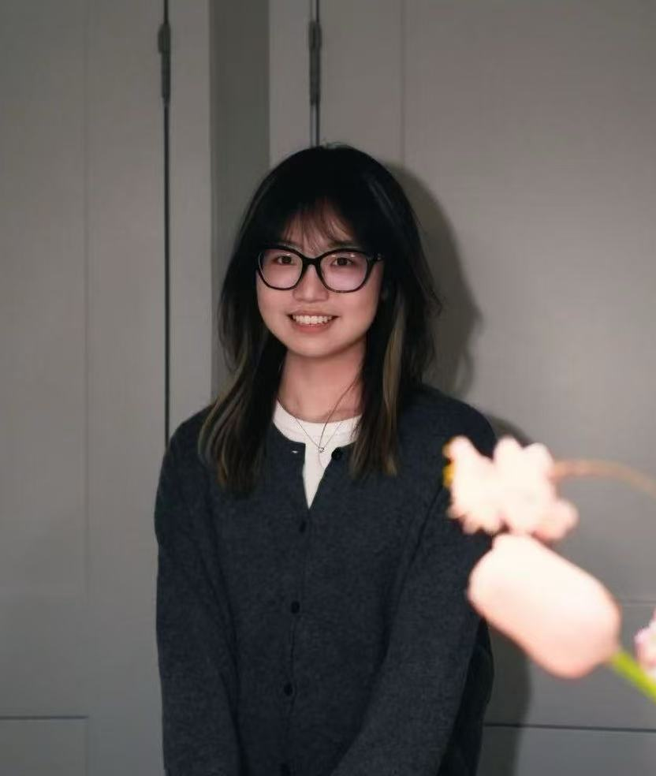
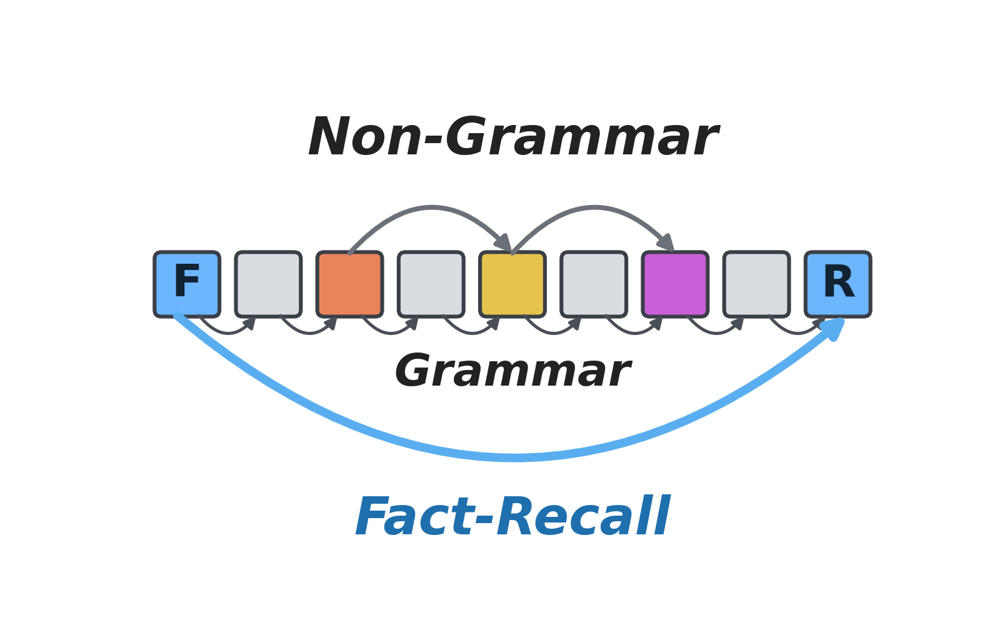
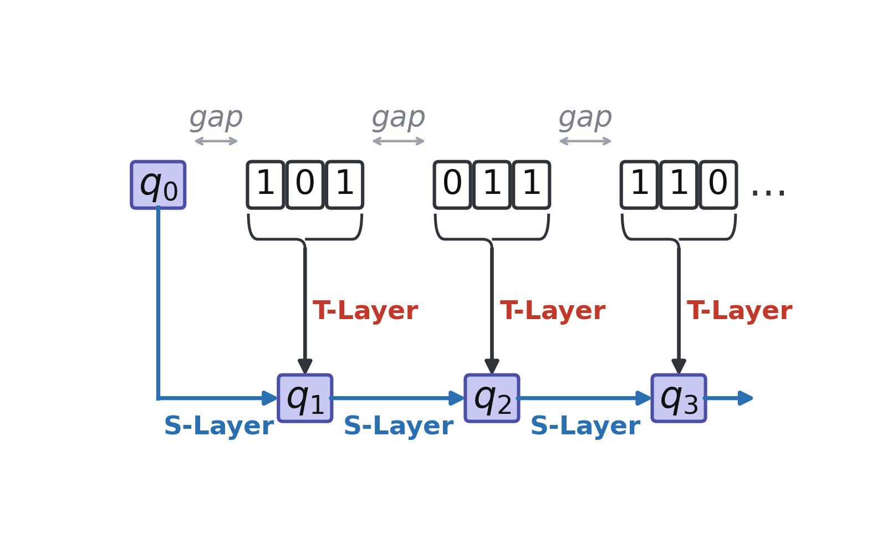
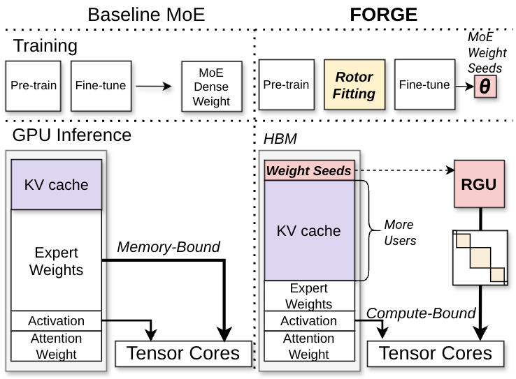
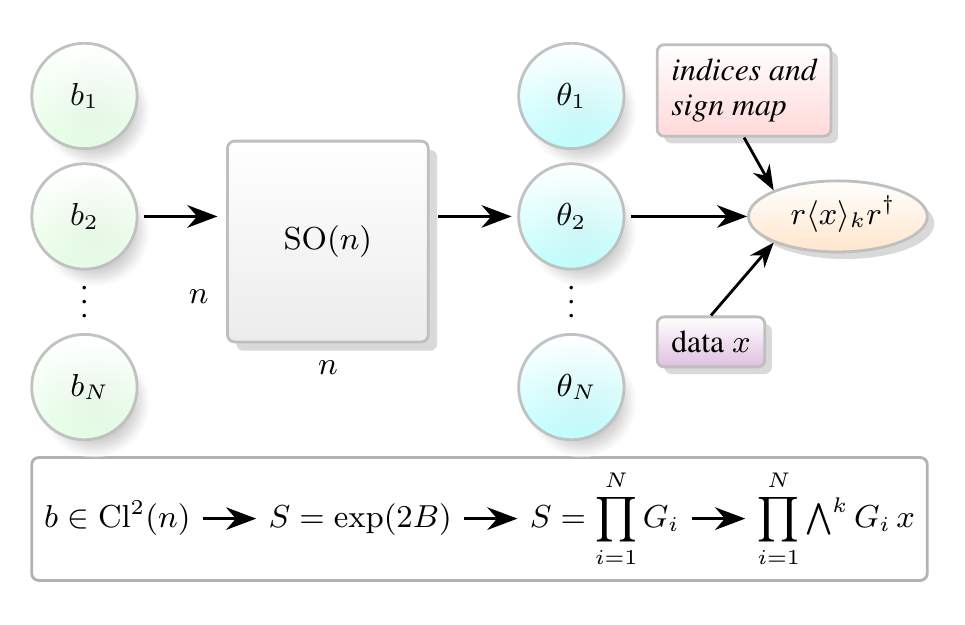
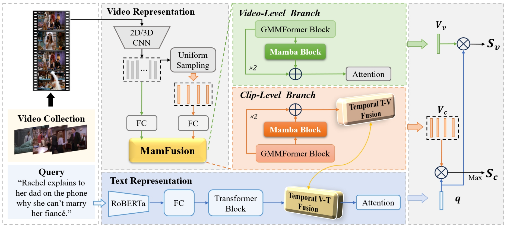
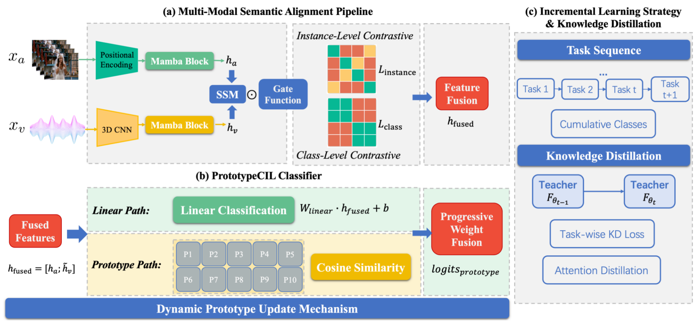
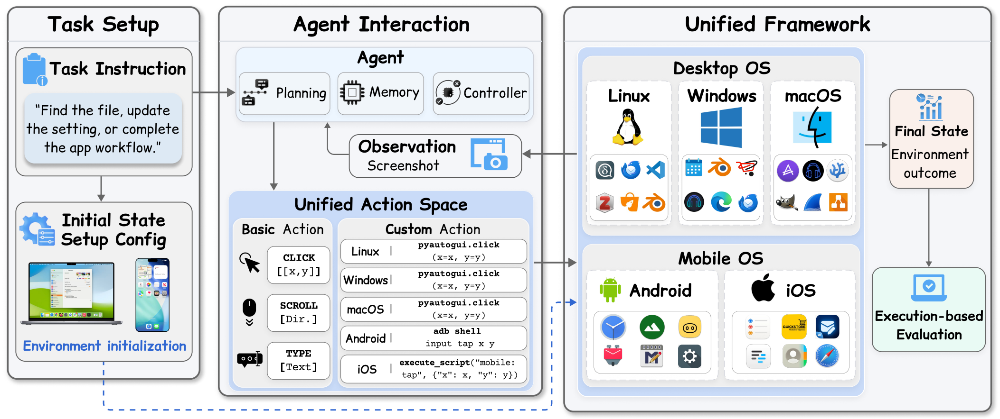
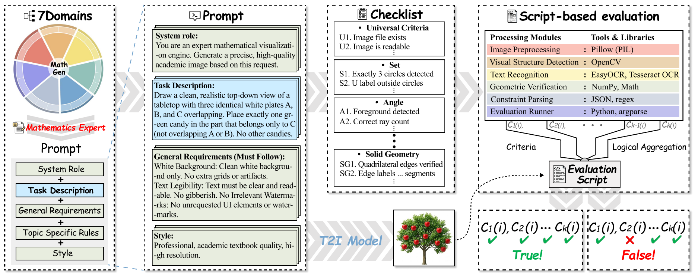

Jiaqi Mo
I'm a senior at the University of Wisconsin–Madison studying computer sciences, graduating in December 2026. I work on efficient machine learning: making large models cheaper to run, from model architecture down to how inference maps onto hardware.
I currently work with Fred Sala on the design of hybrid state-space / Transformer models, and with Minjia Zhang (UIUC) on cascade inference for LLM-based kernel optimization and cloud serving for robot fleets. Before transferring to UW–Madison, I worked with Lina Wei at Hangzhou City University on Mamba-based multimodal models.
I am applying to PhD programs for Fall 2027.

News
- Paper on synthetic languages for lightweight language model design submitted to ACL Rolling Review.
- Paper on layer ordering in hybrid architectures submitted to ICLR 2027.
- FORGE accepted to ASPLOS 2027.
- Two papers accepted to NeurIPS 2026, including one in the Evaluations & Datasets Track.
- Started as a peer mentor for CS 540 (Introduction to Artificial Intelligence).
- MamFusion accepted to ICME 2025 as an oral presentation; follow-up work on continual audio-visual learning accepted to an ACM MM 2025 workshop.
Publications
* equal contribution
Efficient ML: Architectures and Systems




Earlier and Other Work




Teaching
Peer mentor, CS 540: Introduction to Artificial Intelligence, UW–Madison, Fall 2026.